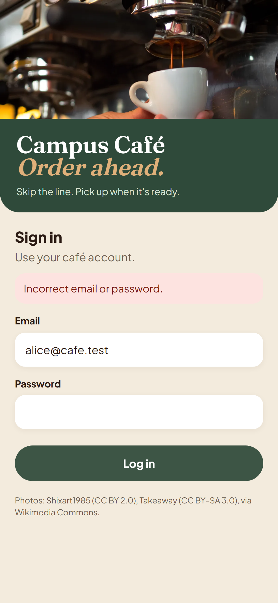
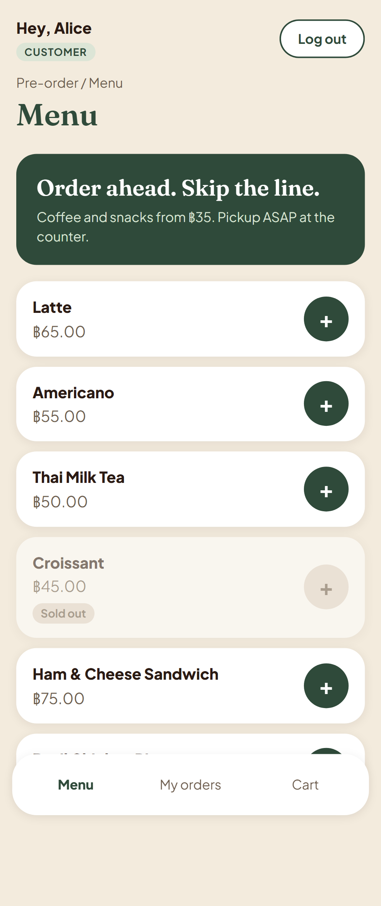
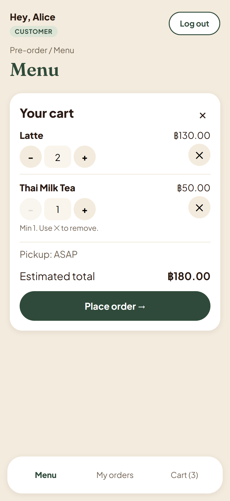
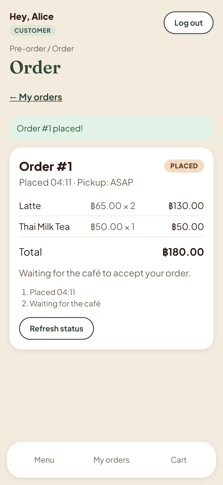
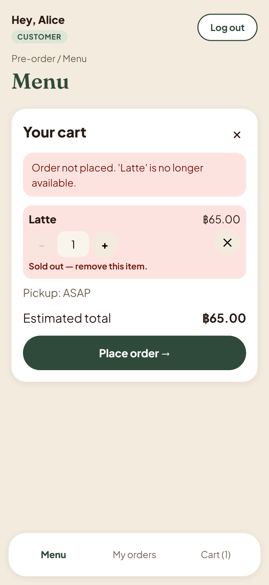
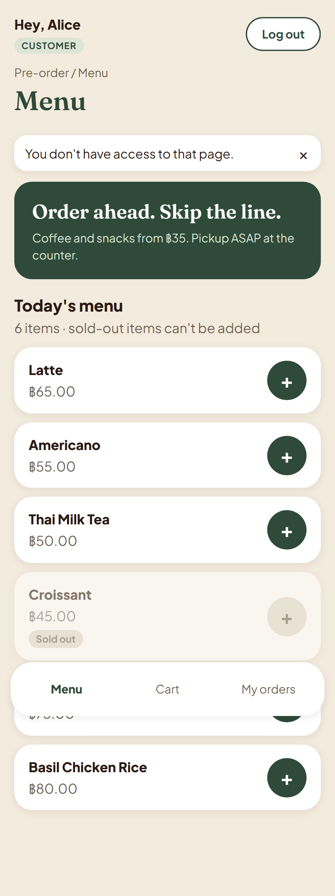
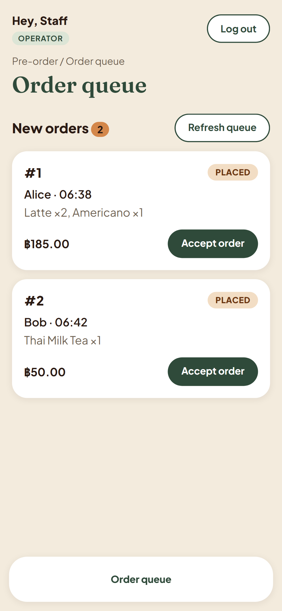
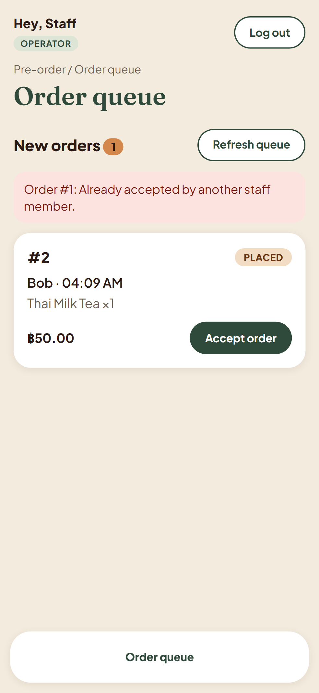
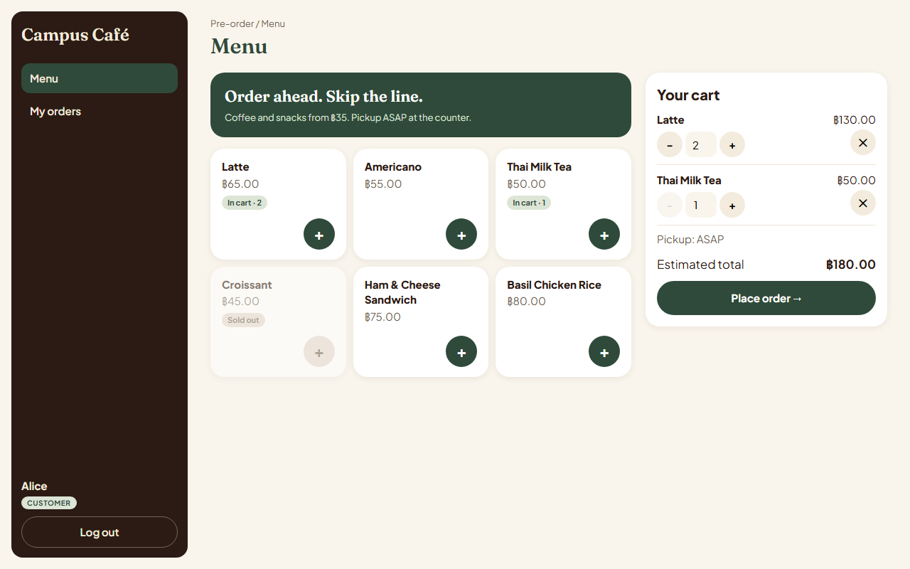
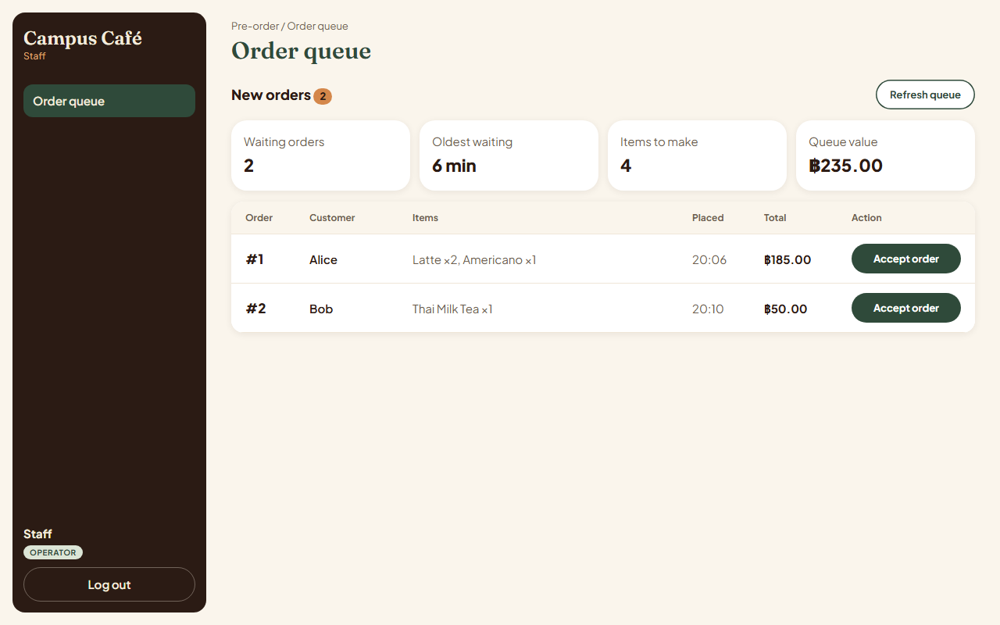

Engineering baseline + working Sprint 1 · Theme 4 (E-Commerce / Ordering) · Campus Café Pre-order
| Team | vieng (GitHub vienggg) — full name, student IDninja (GitHub NinjoMUDA) — full name, student ID |
| Repository | github.com/vienggg/Food-order (public) |
| Submitted version | Branch sprint-1, commit __COMMIT__. Release on main / tag: filled in when vieng merges the release |
| Project board | github.com/users/vienggg/projects/4 (Backlog → Specified → Started → PR Review → Fixing → Done) |
| Test result | Server unit + API 63/63, client unit 5/5, end-to-end 20/20 (phone 375 px + desktop 1280 px), build OK; 46/46 acceptance criteria Pass — test-run.md, ac-results.md |
All documents live in the repository; links point to branch sprint-1. This PDF is an index, not a copy.
| Rubric part (points) | Artifact / link | IDs / what to look at | Status |
|---|---|---|---|
| A. SRS and product scope (10) | docs/srs.md | Actors §2; scope + exclusions §3; FR-01..FR-18 §4; BR-01..BR-07 §5; NFR-01..NFR-09 with measurable targets §6; assumptions AS-01..06, decisions DEC-01..08, questions Q-01..06 §7–9 | Merged (PR #19), reviewed |
| B. Feature inventory and traceability (10) | docs/features.md, docs/traceability.md | F-01..F-12 with sprint and requirements; every FR/BR/NFR → feature → sprint → AC → test → result; coverage check §4 | Merged (PR #17, #29); F-01..F-04 Verified |
| C. System-level SDS (15) | docs/system-sds.md | Architecture + where each rule is enforced §1; UI §2; data model §3; API conventions + shared JSON §4; role/permission matrix §5.2; sessions §6; configuration + GCP plan §7 | Merged (PR #20, #21) |
| D. Three-sprint plan (5) | docs/sprints/plan.md | Goals and dates per sprint; F-01..F-12 allocation; dependencies; Sprint 1 feasibility; remaining work; risks | Merged (PR #16) |
| E. Sprint 1 contracts (20) | docs/sprints/sprint-1/ | F-01-auth, F-02-menu, F-03-orders, F-04-accept: feature SDS, UI, API, data, AC (46), test spec (58 test IDs), DoD link, version history. Shared definition-of-done.md. Committed before code: see §3 | Merged with each feature PR |
| F. Working Sprint 1 and verification (20) | docs/evidence/ | test-run.md (every test, tested commit), ac-results.md (46/46), history.md (contract → red → green, PR/review table), tdd/ red + green outputs, screenshots; §2–§4 below | All Pass |
Needs Node 24 and Docker Desktop. Full steps: README.md.
npm install cp server/.env.example server/.env # set your own SEED_PASSWORD (never committed) npm run db:up && npm run db:migrate && npm run db:seed npm run dev # app http://localhost:5173, API :3000 npm test # server 63 + client 5 npx playwright install chromium && npm run test:e2e # 20 end-to-end (phone + desktop) npm run evidence # re-runs everything and rewrites docs/evidence/*.md for the current commit
Seeded accounts: alice@cafe.test, bob@cafe.test (CUSTOMER), staff@cafe.test (OPERATOR); password = your SEED_PASSWORD.
| # | Step | Shows |
|---|---|---|
| 1 | Log in as alice with a wrong password → "Incorrect email or password."; then the right password → /menu | F-01, FR-01, DEC-02 |
| 2 | Croissant is greyed "Sold out" with a disabled +. Add Latte twice and Thai Milk Tea → one Latte line ×2, estimated ฿180.00 | F-02, BR-03, BR-02 (+1 on same line) |
| 3 | Place order → /orders/N "Order #N placed!", total ฿180.00 from the server, status PLACED | F-03, BR-04, BR-05 |
| 4 | Rejected case: in another tab mark an item sold out (or run TEST-F03-20); Place order → "Order not placed. 'Latte' is no longer available.", cart kept, nothing saved | BR-03, NFR-04 |
| 5 | Access case: as alice open /operator/orders → back to /menu "You don't have access to that page."; API answers 403 | FR-04, role matrix |
| 6 | Log out, log in as staff → queue oldest first → Accept → "Order #N accepted."; alice's order now ACCEPTED | F-04, FR-09, FR-10 |
| 7 | Race: TEST-F04-07 sends 20 accepts at once → exactly one 200 (run npm test) | BR-07 |
| Feature (owner) | Contract | Tests fail [red] | Code passes [green] | Pull request (reviewer) |
|---|---|---|---|---|
| F-01 Login (vieng) | e187cf8 | d0d4eb9 11 failed | eebaf41 11 passed | #22 (ninja) |
| F-02 Menu (ninja) | 6e25979 | 3376cd3 6 failed | 2816f63 6 passed | #23 (vieng) |
| F-03 Orders (ninja) | 3178514 | e922626 29 failed | 13a2651 29 passed | #26 (vieng) |
| F-04 Accept (vieng) | 92470d8 | 463f459 10 failed | f729818 10 passed | #24 (ninja) |
Workflow: Issue on the board → branch from the Issue (gh issue develop) → PR into sprint-1 → the other student reviews with a written check, approves and merges (merge commit, never squash); the author replies to each review. Examples of review findings that changed code: setup tests needed prisma generate (#18 → bd502d0); Vite cache committed on the F-04 branch (removed before #24); comment style on #26.
| Area | vieng | ninja |
|---|---|---|
| Requirements and design | SRS (Doc A); SDS §1, 2, 5, 6, 7 (architecture, UI, roles, auth, config) | Feature inventory + traceability (Doc B); SDS §3, 4 (data model, API); sprint plan (Doc D) |
| Features (contract, tests, code) | Setup skeleton (#1), F-01 login, F-04 accept | F-02 menu, F-03 orders, client test setup |
| Testing | Playwright setup, E2E for F-01, F-02, F-04; evidence script | E2E for F-03; traceability results; cross-review runs of every vieng PR |
| Reviews | Reviewed and merged #16, #17, #21, #23, #26, #27, #29 | Reviewed and merged #18, #19, #20, #22, #24, #25, #30 |
Both students used Claude Code (Anthropic) as a coding and documentation assistant, each in their own session, working on bounded GitHub Issues with the feature contract as input. Tasks assisted: drafting documents (SRS, SDS, plan, contracts, traceability), writing failing tests first and then implementation, UI screens, running tests, opening PRs and drafting review comments. The two AI sessions coordinated through a private chat relay; each student's AI reviewed the other student's PRs by running the code and tests. Both students are responsible for the result and can explain every part; decisions were recorded in Issues, PR reviews and the documents above.
5f85976, 810c7e3, 2797462, d92baf0). Every PR from #16 on was reviewed and merged by the other student. Details: history.md "Known exceptions".feature/F-03-e2e is linked to Issue #10 through PR #27; the branch link under "Development" is added on the website.main, tag v0.1.0-sprint1 and GCP deployment are not done yet (deployment is Lab 5).








